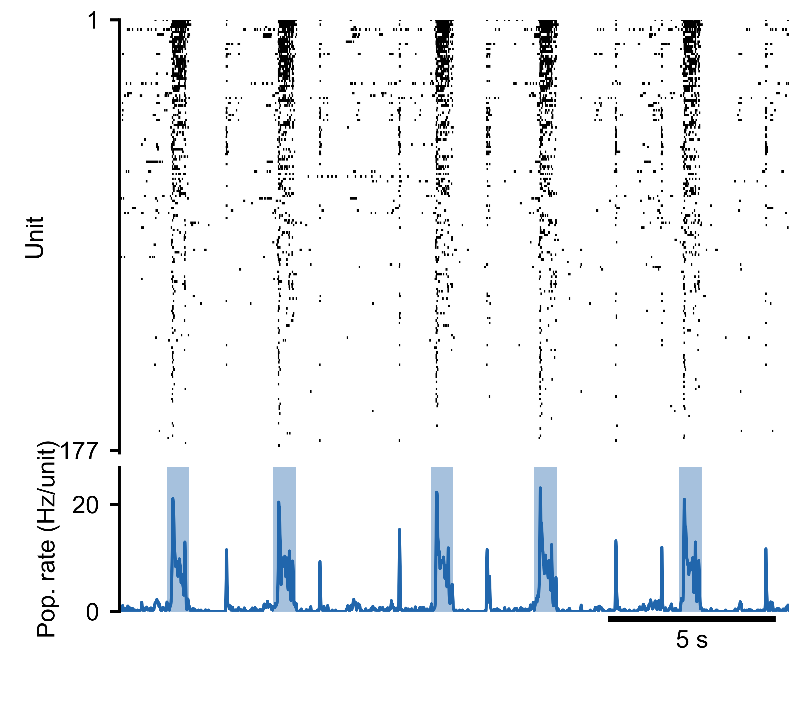

Quick Start
This guide walks through the basics of creating and analyzing spike train data with SpikeLab. All spike times in the library are in milliseconds.
Creating a SpikeData Object
A SpikeData object holds spike trains for one or more units
(neurons or electrodes). Each spike train is a NumPy array of spike times:
import numpy as np
from spikelab import SpikeData
# Three units with spike times in milliseconds
spike_trains = [
np.array([10.0, 25.5, 50.3, 102.1, 200.0]),
np.array([15.2, 48.0, 99.7, 150.5]),
np.array([5.0, 30.0, 60.0, 90.0, 120.0, 150.0, 180.0]),
]
sd = SpikeData(spike_trains, length=250.0)
print(sd.N) # 3 units
print(sd.length) # 250.0 ms
The length parameter sets the total recording duration. If omitted, it
defaults to the time of the last spike. You can also pass start_time to
shift the time origin (useful for event-centred data where t=0 is the event).
Loading from a File
SpikeLab can load data from several file formats. The simplest is a Python
pickle file containing a SpikeData object:
import pickle
with open("my_recording.pkl", "rb") as f:
sd = pickle.load(f)
For HDF5, NWB, or KiloSort formats, see the Loading Data guide.
Plotting
The quickest way to visualize a recording is the built-in
plot() method:
# Spike raster
sd.plot(show_raster=True)
# Raster + population rate
sd.plot(show_raster=True, show_pop_rate=True)
This produces a multi-panel figure with the selected views. See
plot_recording() for the full list
of options.
{kind=link}

Spike raster (top) and population rate (bottom) for a 177-unit MEA recording.
Generated with sd.plot(show_raster=True, show_pop_rate=True).
Basic Analysis
Once you have a SpikeData object, you can compute common
spike train statistics:
# Mean firing rate per unit in Hz
rates = sd.rates(unit="Hz")
# Inter-spike intervals per unit (list of arrays, in ms)
isis = sd.interspike_intervals()
# Binned spike counts (units x time bins)
counts = sd.binned(bin_size=50.0)
# Binary raster matrix (units x time bins)
raster = sd.raster(bin_size=1.0)
Each of these returns NumPy arrays that you can feed into your own analysis code or into the higher-level methods described in the guides below.
Further Reading
Spike Analysis — burst detection, population rate, and per-unit metrics.
Firing Rates and Correlations — instantaneous firing rates, pairwise correlations, and cross-condition comparisons.
See the Guides section for the full list of in-depth tutorials.
The API Reference documents every class and method.
Try the example notebook for a complete analysis pipeline on real data.